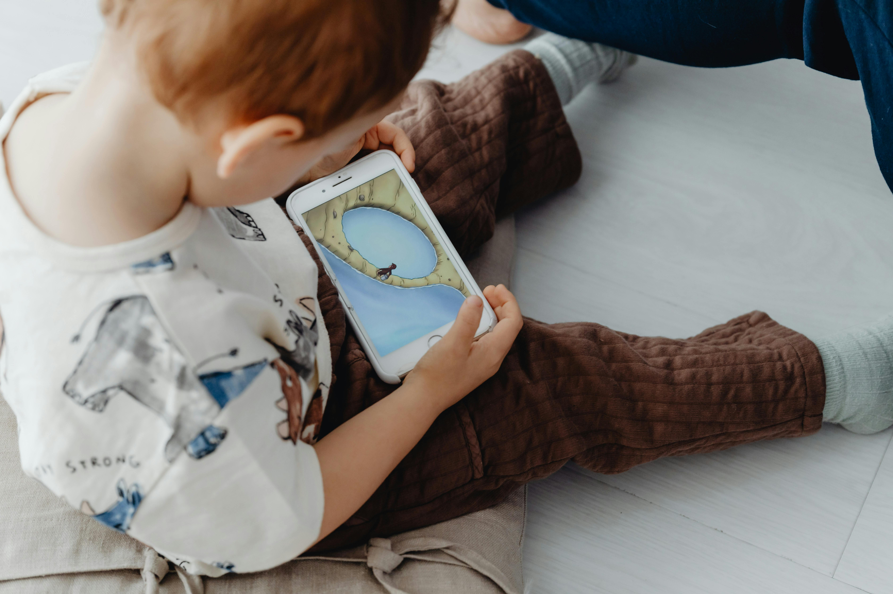

Key Research Findings
Language Development & TV During Meals
Recent research from a large French birth cohort (ELFE) followed over 13,000 children from ages 2 to 5.5 and found that the context of screen use matters more than the total screen time. For example, having the TV on during family meals was linked to delayed language and cognitive development, more so than simply how many hours a child watched screens daily. Although longer screen use was slightly associated with lower cognitive scores—especially in language, fine motor skills, and self-help areas—these effects were small. Interestingly, children who used screens moderately (e.g., 30–60 minutes) sometimes performed better in non-verbal reasoning tasks at age 3.5. The study highlights that interactive activities, sleep, outdoor play, and parental engagement are much more important factors. So rather than focusing only on time limits, parents are encouraged to turn off screens during family time and prioritize shared activities that support development.
Yang, S., Saïd, M., Peyre, H., Ramus, F., Taine, M., Law, E. C., Dufourg, M.-N., Heude, B., Charles, M.-A., & Bernard, J. Y. (2023).
Associations of screen use with cognitive development in early childhood: The ELFE birth cohort. Journal of Child Psychology and Psychiatry, 65(5), 680–693.
Click for further reading.
Tactile Exploration & Screen Exposure
This study explored how screen time affects toddlers' ability to learn by touching and exploring objects—skills essential for understanding the world. Researchers observed 135 children aged 6 to 36 months while they played with toys like rattles, plastic keys, and cubes. They found that toddlers who were exposed to screens more often (including background screens like TVs on in the room) used fewer age-appropriate exploration strategies, such as pressing, turning, or observing objects.
Younger toddlers who hadn't yet used screens were more focused and explored more challenging parts of toys, suggesting better fine motor and attention skills. In contrast, those with high screen exposure tended to rely on simpler actions like shaking or throwing objects. These children were less likely to engage deeply with toys, indicating a possible delay in tactile learning.
However, the study also found that children who engaged in more alternative activities like outdoor play, crafts, or pretend games showed better tactile skills—even if they also used screens. This means that screen time isn't always the problem, but lack of parent-led play and stimulation may be. Reducing passive screen use and offering children more opportunities to touch, feel, and explore their environment can make a big difference in their development.
Gillioz, E., Gentaz, E., & Lejeune, F. (2024). The effect of screen habits and alternative activities on tactile exploration skills in 6- to 36-month-old toddlers. Children, 11(8), 1027.
Click for further reading.
Family Media Ecology & Digital Media Use
This comprehensive review challenges the idea that all screen time is harmful and instead urges parents to focus on the "family media ecology." That means considering not only the amount of screen time, but also who is using the media, what type of content it is, when it's being used, and the role it plays in daily routines.
Researchers found that when digital media is used as a "babysitter," during meals or to calm children down, it may interfere with language development, sleep quality, emotional regulation, and attention. However, when used in ways that support learning—such as watching high-quality educational content together with a parent (Joint Media Engagement)—media can actually support children's development.
The study introduces a new model called DREAMER (Dynamic, Relational, Ecological Approach to Media Effects Research), which highlights the importance of seeing digital media as part of the child's environment—just like food, sleep, or social interaction. In other words, screens can help or harm depending on context. For example, playing a learning app together at story time may boost language, but watching violent content alone before bed may harm sleep and emotions.
Parents are encouraged to ask:
- Is this content right for my child's age?
- Am I watching or discussing it with my child?
- Am I using it to replace playtime, social interaction, or sleep?
Barr, R., Kirkorian, H., Coyne, S., & Radesky, J. (2024). Early Childhood and Digital Media. Cambridge University Press.
Click for further reading.
Visual Engagement vs Real Learning
This study from UC Berkeley shows that children who pay the most visual attention to flashy, colorful media may actually learn the least. In a word-learning task with 3- to 6-year-old children, those who stared longest at vibrant, moving backgrounds performed worse in identifying toy names than those who paid less attention.
Researchers split children into two groups: one watched new words presented on a plain gray background, while the other saw the same learning content in front of exciting, colorful videos. Although kids in the "flashy video" group looked at the screen longer, they retained less information.
The findings suggest that "attention-grabbing" media isn't always educational. Bright visuals, fast motion, and stimulating effects may distract young brains instead of supporting learning. Interestingly, children in the simple background group performed better, even when they weren't staring as much. This indicates that overstimulation—not just screen time—can hinder early learning.
Parents should be cautious with highly stimulating children's content, even if it appears "educational." Sometimes, less is more when it comes to helping your child learn from screens.
Shepherd, S. S., & Kidd, C. (2024). Visual engagement is not synonymous with learning in young children. Proceedings of the Annual Meeting of the Cognitive Science Society, 46(0).
Click for further reading.
Meta-Analysis: Screen Use and Child Language Skills
This large meta-analysis reviewed 42 studies with nearly 19,000 children and found that more screen time is linked to weaker language skills in children under 12. In particular, background television—TV that's on while no one is actively watching—was even more harmful than direct screen time. Why? Because it disrupts parent-child interaction, a key ingredient in language learning.
However, not all screen time is equal. Watching educational content and co-viewing (watching together with a caregiver) were linked to stronger language development. Children also had better language outcomes when screen use started later in childhood.
The takeaway for parents is this:
- Limit screen time, especially in toddlers.
- Avoid having the TV on in the background.
- When screens are used, watch with your child and choose age-appropriate educational content.
- Remember: the quality of your interaction matters more than the device itself.
Madigan, S., McArthur, B. A., Anhorn, C., Eirich, R., & Christakis, D. A. (2020). Associations between screen use and child language skills: A systematic review and meta-analysis. JAMA Pediatrics, 174(7), 665–675.
Click for further reading.
Bedtime Screen Removal Helps Toddlers Sleep Better
In a randomized controlled trial, 108 UK families with toddlers aged 16–30 months replaced screens before bed with calming activities (like books or puzzles). Those who followed this change saw major sleep improvements: toddlers in the intervention group slept more efficiently and woke up less during the night.
The intervention was simple and achievable — and parents found it much easier to implement than expected. While attention improvements were not statistically significant, researchers concluded that better sleep alone is a valuable outcome for toddlers' development and emotional health.
Pickard, H., Chu, P., Essex, C., Goddard, E. J., Baulcombe, K., Carter, B., Bedford, R., & Smith, T. J. (2024). Toddler screen use before bed and its effect on sleep and attention: A randomized clinical trial. JAMA Pediatrics, 178(12), 1270–1279.
Click for further reading.
Mobile Devices and Language Delays in Toddlers
This large Danish study tracked over 31,000 children aged 2–3 and found that daily use of mobile devices for even one hour was linked to poorer language development. These toddlers had more difficulty understanding and expressing themselves, even after accounting for family background and routines.
Interestingly, reading to children daily helped support language comprehension, but it didn't prevent expressive language problems caused by device use. Also, the negative effects of mobile screens were distinct from other devices like TV or computers—indicating mobile-specific risks.
For parents, the message is clear:
- Limit mobile device use to less than one hour per day for toddlers.
- Read books with your child daily—it helps understanding.
- Encourage face-to-face conversation and interactive play to support both expressive and receptive language skills.
Rayce, S. B., Okholm, G. T., & Flensborg-Madsen, T. (2024). Mobile device screen time is associated with poorer language development among toddlers: Results from a large-scale survey. BMC Public Health, 24(1050).
Click for further reading.
.jpg)
Screen Time, Outdoor Play, and Brain Development
This Canadian study looked at 352 preschoolers and grouped them by their patterns of screen time (ST) and outdoor play (OP). The researchers found that children with low screen time and medium-to-high outdoor play had the best results in both cognitive and social-emotional development. These kids performed better on tasks like remembering, staying focused, and managing their emotions.
Four profiles were identified:
- Low ST / Medium-High OP (best performing group)
- High TV / High OP
- Medium ST / Low OP
- High ST / Medium-High OP
Children in profiles 2–4 showed lower scores in key developmental areas like self-control, emotional regulation, and the ability to stop impulsive behaviors.
What does this mean for parents? Simply reducing screen time isn't enough—increasing outdoor play is just as important. Kids benefit the most when they spend more time outside and less time on screens.
So, for healthy brain and emotional development:
- Keep screens limited.
- Encourage daily outdoor play—even a little helps.
- Replace screen time with active play, nature time, or imaginative games.
This approach helps children become better thinkers, problem-solvers, and self-regulators—skills that support lifelong success.
Moldenhauer, R. (2024). The interplay between screen time and outdoor play on preschool children's cognitive and social-emotional development [Master's thesis, University of Alberta]. University of Alberta Education and Research Archive.
Click for further reading.
Screen Time and Cognitive Development: It's All About the Context
This in-depth PhD dissertation from Regent University reviewed dozens of studies on children aged 5 to 17 and found that screen time can both help and harm cognitive development—depending on the type of content, how it's used, and parental involvement.
Educational screen time, especially when interactive and done with adult guidance, can boost problem-solving, memory, and language skills. For example, using learning apps or co-viewing educational videos may enhance brain development. But unstructured, fast-paced, or entertainment-based screen time—like fast-cut cartoons, violent games, or passive scrolling—was linked to attention problems, memory overload, and even weaker emotional control.
The study also found that multitasking with screens (e.g., watching a show while using a tablet) leads to cognitive overload, making it harder for kids to stay focused or remember what they learned. Children from lower-income households or without active parental mediation were more at risk for these negative effects.
For parents, this research offers clear, practical guidance:
- Choose interactive, age-appropriate, educational content.
- Avoid fast-paced or flashy entertainment content, especially close to bedtime.
- Practice co-viewing: talk about the screen content with your child.
- Set clear screen time limits, but also focus on quality, not just quantity.
Screens are not the enemy—when used wisely, they can be powerful tools for learning and growth.
Bagmon McIver, L. (2025). Beyond the screen: Impact of screen time on children's cognitive development (Doctoral dissertation, Regent University). Regent University School of Psychology and Counseling.
Click for further reading.
Excessive Screen Time and Developmental Delays
This large Canadian study followed nearly 3,000 children aged 5, linking parent-reported screen time with teachers' observations of children's developmental progress. It found that children who spent more than one hour per day on screens were significantly more likely to be vulnerable in areas such as language, thinking, physical health, social skills, and emotional regulation.
For example, children with screen use over the 1-hour daily guideline were:
- 81% more likely to struggle in language and thinking,
- 60% more likely to have weak social skills,
- 60% more likely to face communication challenges,
- And also at greater risk for delays in physical and emotional development.
These links held true even after adjusting for income, sleep, and physical activity. Interestingly, lower-income families and boys were more likely to report excessive screen time. Yet the negative effects of screen use were not just about income—they affected children across all backgrounds.
The key takeaway?
- Stick to no more than 1 hour per day for preschoolers.
- Encourage active play, good sleep, and face-to-face interactions.
- Be aware that too much screen time might push out time needed for play, learning, and emotional growth.
Screens may seem harmless or even educational—but if overused, they could silently reduce your child's readiness for school.
Kerai, S., Almas, A., Guhn, M., Forer, B., & Oberle, E. (2022). Screen time and developmental health: Results from an early childhood study in Canada. BMC Public Health, 22(1), 310.
Click for further reading.
Screen Time and Social Cognition: What the Brain Remembers
This multidisciplinary analysis combined insights from neuroscience, cognitive psychology, and behavioral science to explain how excessive screen exposure in early childhood can disrupt the development of social cognition—the ability to understand and relate to others.
The article examined real-world studies, including one from the American Academy of Pediatrics and a digital detox experiment in French schools. Children with high screen exposure showed:
- Reduced empathy, trouble reading facial expressions, and less perspective-taking ability.
- Weaker executive function—making it harder to focus, control impulses, or switch attention.
- Increased behavioral problems, such as aggression and poor emotional regulation.
- A preference for digital over real-world social interaction.
But it's not all bad news. When children reduced screen time and replaced it with face-to-face play, outdoor activities, and reading, they became more focused, more empathetic, and better at handling social situations.
The findings suggest that early screen use, if unbalanced, can shape how the brain wires itself for social life—possibly affecting relationships, school success, and emotional health in the long term.
For parents and educators, the study offers a clear path:
- Limit passive screen time, especially in children under 6.
- Encourage real-world play, conversation, and teamwork.
- Use screens wisely, with adult involvement and balance.
Madi, A. (2025). The impact of early screen exposure on social cognition in children: A multidisciplinary theoretical analysis. Anthropology and Society Sciences Journal, 08(2), 77–96.
Click for further reading.

Screen Content Type Matters for Mental Health
This massive study from Shanghai followed nearly 16,000 children aged 3 to 6 and discovered that both total screen time and the type of content children are exposed to play a major role in their mental health.
Here's the key finding:
- More screen time = higher risk for emotional and behavioral problems.
- But kids who watched more educational programs had lower risks for mental health issues.
- On the other hand, exposure to non–child-directed programs (such as adult TV content) nearly tripled the risk for mental health problems.
Interestingly, there was no significant link between mental health and exposure to entertainment content, games, or social media. However, children who watched social media and games the most often also had longer overall screen time, which still increased their risk.
The good news? Watching educational programs with calm pacing and prosocial messages helped reduce mental health risks. Parents should:
- Limit screen time to under 1 hour per day.
- Prioritize high-quality educational shows like Sesame Street.
- Avoid adult TV content entirely, especially with toddlers.
- Make screen time a shared, supervised experience.
Wang, H., Zhao, J., Yu, Z., Pan, H., Wu, S., Zhu, Q., Dong, Y., Liu, H., Zhang, Y., & Jiang, F. (2024). Types of on-screen content and mental health in kindergarten children. JAMA Pediatrics, 178(2), 125–132.
Click for further reading.
Screen Use and the Role of Parental Mediation
This comprehensive literature review analyzed dozens of studies from 2010–2022, focusing on children aged 0 to 5, a period of rapid brain growth. It found that screen exposure affects both cognitive and emotional development, but the type of content, screen design, and parental involvement make all the difference.
Key findings include:
- Children under 2 have difficulty learning from screens, especially without parental support.
- Background screens (like a TV on in the room) and adult content negatively impact attention, learning, and emotional regulation.
- Fast-paced shows and flashy apps overwhelm working memory and reduce self-control.
- Well-designed educational apps, especially interactive ones, can help with memory and language — but only when used with guidance.
Perhaps most importantly, the study emphasizes that parents' screen habits affect their children's. If parents are always on their phones or use screens to calm children, it can reduce meaningful interaction and even harm children's ability to regulate emotions.
What parents can do:
- Avoid screen use under age 2 (except for video calls).
- Limit daily screen time to max 1 hour for ages 2–5.
- Turn off background TVs and avoid adult shows when kids are around.
- Use co-viewing, ask questions, and explain what's on screen.
- Don't use screens as a "babysitter" during meals, bedtime, or playtime.
- Choose slow-paced, ad-free, and interactive educational content.
Screens can be part of a healthy childhood—but only when balanced with human connection, outdoor play, and loving guidance.
Swider-Cios, E., Vermeij, A., & Sitskoorn, M. M. (2023). Young children and screen-based media: The impact on cognitive and socioemotional development and the importance of parental mediation. Cognitive Development, 66, 101319.
Click for further reading.